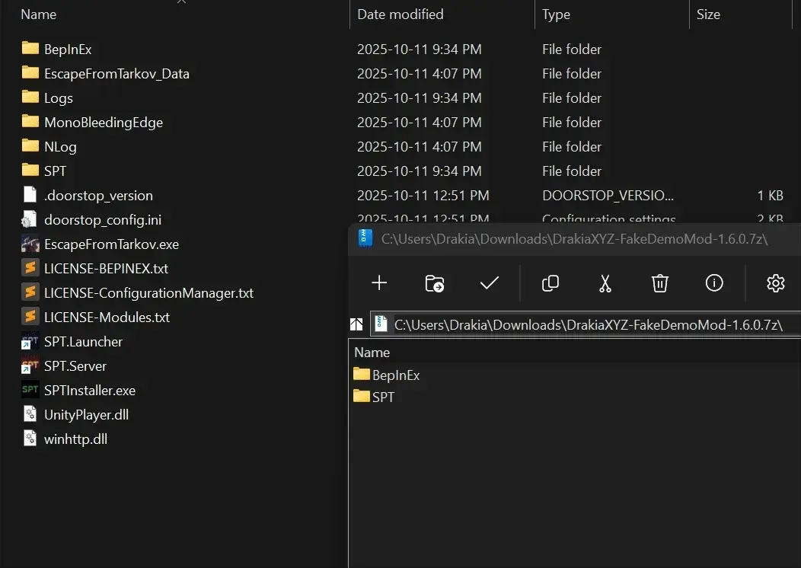

Mod
Shared Weapon Builds
- Downloads
- 543
- Favourites
- 5
- Mod lists
- 27
What’s included
This mod makes it infinitely easier to share your weapon builds on Discord as well as when you’re playing with a group of friends using Fika.
This mod features:
- CTRL-C & CTRL-V weapon build import & export bindings to make it very easy to copy and paste a weapon build from Discord into the game
- A websocket & utilities to keep all weapon builds on the SPT server central, meaning that all profiles will have access to them (And will see them be edited live if someone is looking at a build!)
- A quick and easy way to grab saved builds out of the ‘WeaponBuilds’ folder, for storage or taking it to another playthrough.
How to install
Demonstration Video (Yes, it has a different mod name. The installation is the same)

Credits
- Lacyway and the Fika team, this mod uses some copied classes to do with websockets that is largely based on their code.
Version
1.0.0
SPT ~4.0
Fika: compatible
543 downloads27.7 KB
Initial release!